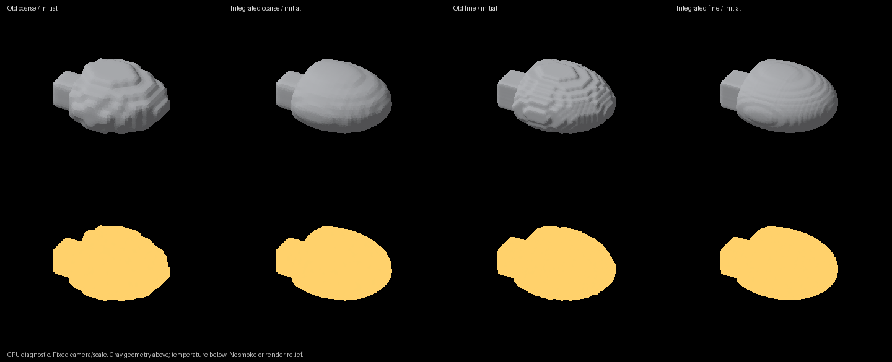
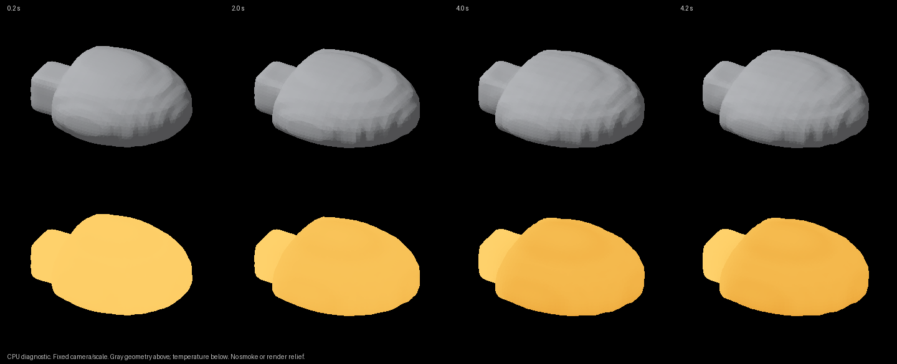
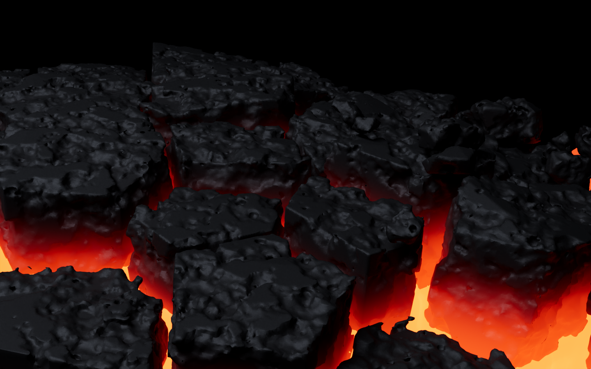

Fixing the simulation.
No final lava render has passed review.
The images below are CPU geometry diagnostics. They show a specific repair; they are not the finished material or video.
A smoother starting surface, with the correct mass.
The old shape started with visible steps because boundary cells were either full or empty. The revised initializer measures how much lava occupies each boundary cell. The comparison uses the same camera and scale.

Geometry above; temperature below. Both revised starting volumes agree with an independent volume integral to within 0.011%. Residual surface bands still need review during motion.
Verified repairs
Corrected a stress/heat spike near fracture, the pipe’s collision and thermal boundaries, and a pressure step that failed at finer resolution. Rock now absorbs heat and warms up. Checkpoints retain the source schedule and rock state.
Final publication requires physical checks, actual open fractures, and a review of geometry, motion and resolution tied to the exact cache. Melting connections no longer count as solid fractures.
Simulation evidence
| Test | Status | Simulated time | Grid | Time accuracy | Solid fracture edges |
|---|
A fixed-step control missed the temperature accuracy limit. Automatic timestep refinement now passes both startup and the previously stalled cooling interval. The longer run passes its error checks through the saved time, but has not finished its requested interval. An experimental higher-order heat method failed the coupled test and is not used.
Current CPU frames — rejected for final presentation

The mass stays connected. Surface bands remain and there are no open cracks. This is a small physical specimen, not the sigil or a finished lava shot.The shot was being judged too early.
A separate thermal column estimates roughly 11 seconds for the exposed top to form a coherent crust, and 39 seconds to fall below 1000 K. It includes conduction, latent heat, radiation and a finite rock bed; it omits flow, lateral cooling and the hot inlet. These estimates expose a timing problem, but are not a prediction of the finished 3D shot. Thermal comparison and refinement results.
Still unresolved
Sustained breakup of a thick crust, full-sequence accuracy and resolution, the quality of the moving surface, smoke and heat coupling, and the final Mitsuba appearance. Passing a numerical test does not mean these are fixed.
Previous render — rejected

This used pre-existing fragments and a separate temperature treatment. It is retained for reference.Previous material study and limitations